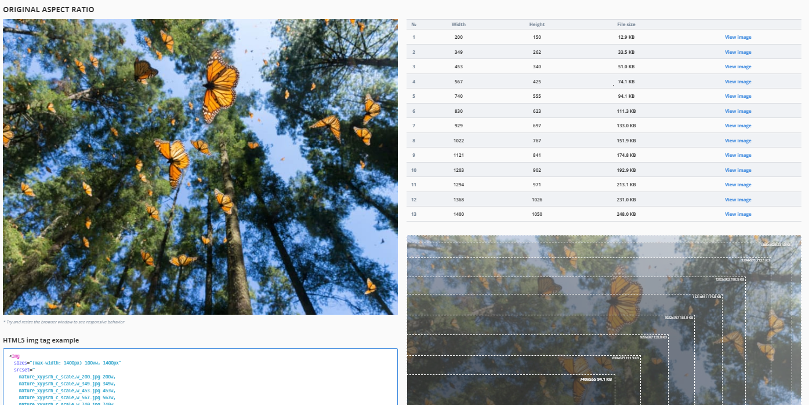
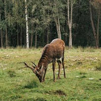

Images adaptées
Concevoir des images adaptées
Une image qui est plus large que son conteneur débordera, ce qui peut introduire un défilement horizontal.
Pour éviter cela, les images peuvent être adaptées de l’une des quatre façons suivantes:
- Technique 1 – Styliser l’image avec le CSS
width:100% - Technique 2 – Styliser l’image avec le CSS
max-width:100% - Technique 3 – Servir différentes tailles d’image à différentes tailles d’écran en utilisant l’attribut
srcset - Technique 4 – Servir différentes images à différentes tailles d’écran en utilisant l’élément
picture.
Technique 1 : Styliser l’image avec le CSS width:100%
Si le width de l’image est réglée via CSS à un pourcentage et que la propriété de height est réglée à auto, l’image s’adapte aux dimensions de son conteneur. Habituellement, le height de l’image est réglée à 100 %.
Redimensionner la fenêtre du navigateur pour voir l’échelle d’image.
L'exemple commence

Fin du code
CSS
Début du code
#technique-1 {
width: 50%;
border: 5px dotted black;
}
#technique-1 img {
width: 100%;
height: auto;
}Fin du code
HTML
Début du code
<div id="technique-1">
<img src="deer.png" alt="Cerf pâturant dans un petit pré dans une forêt.">
</div>Fin du code
Technique 2 : Styliser l’image avec le CSS max-width:100%
Si la propriété CSS max-width est réglée via CSS à 100 %, l’image sera réduite, mais jamais augmentée pour être plus grande que sa taille originale.
Redimensionner la fenêtre du navigateur pour voir l’échelle de l’image.
L'exemple commence
Fin du code
CSS
Début du code
#technique-2 {
width: 50%;
}
#technique-2 img {
max-width: 100%;
height: auto;
}Fin du code
HTML
Début du code
<div id="technique-2">
<img src="deer.png" alt="Un cerf qui pâture dans un petit pré dans une forêt.">
</div>Fin du code
Technique 3 : Servir différentes tailles d’image à différentes tailles d’écran en utilisant l’attribut srcset
Cette technique sert différentes tailles d’images, plus grande ou plus petite, selon l’appareil.
L’attribut srcset contient une liste séparée par des virgules de versions différentes d’une même image, chaque élément de liste comprenant le nom du fichier et la largeur réelle de l’image (l’unité w équivaut aux pixels).
L’attribut sizes contient une liste séparée par des virgules de tailles différentes de créneaux pour les images à différentes largeurs d’écran. La largeur de la fente est souvent exprimée à l'aide de l'unité de largeur de la fenêtre d'affichage Viewport (vw), mais des unités absolues et relatives peuvent également être utilisées. Chaque unité vw représente 1% de la largeur de la fenêtre d'affichage. Une condition média vérifie la largeur de l’écran. La dernière largeur de créneau n’a aucune condition média; c’est la valeur par défaut qui est choisie lorsqu’aucune condition média n’est vraie. Cet exemple comporte un emplacement de 50vw de large (50% de la largeur de la fenêtre d'affichage) pour les écrans de moins de 900 pixels de large, et un emplacement de 700 pixels de large pour les autres.
L’attribut src contient le nom du fichier image par défaut.
L’attribut alt contient le texte de remplacement.
HTML
Début du code
<img srcset="deer-320-labelled.jpg 320w,
deer-700-labelled.jpg 700w"
sizes="(max-width: 900px) 50vw,
700px"
src="deer-320.jpg"
alt="Un cerf qui pâture dans un petit pré dans une forêt.">Fin du code
Une fois ces attributs en place, le navigateur :
- Vérifiera la largeur de l’appareil.
- Déterminera quelle condition média dans la liste
sizesest la première à être vraie. - Vérifiera la taille du créneau donné à cette requête média.
- Chargera l’image mentionnée dans la liste
srcsetqui a la même taille que le créneau ou, s’il n’y en a pas, la première image qui est plus grande que la taille du créneau choisi.
Pour voir l'échelle de l'image, réduisez la fenêtre du navigateur, effacez le cache du navigateur (si l'image de 700px de large est déjà téléchargée, il faut l'effacer), et rafraîchissez la fenêtre du navigateur.
L'exemple commence
L'exemple finit
Ressource : Générateur d’image adaptée
Le Responsive Image Generator (générateur d’image adaptée) est un outil en ligne qui vous permet de téléverser une image et de générer diverses dimensions d’images pour les points d’interruption adaptés.
Technique 4 : Servir différentes images à différentes tailles d’écran en utilisant l’élément picture
Un petit objet d’intérêt dans une grande image est difficile à discerner si cette même image est rétrécie pour convenir à un appareil mobile. Le cadrage enlève les zones extérieures inutiles d’une image pour se rapprocher de l’objet d’intérêt. L’élément <picture> est couramment utilisé dans la conception adaptative pour « Direction artistique », où différents cadrages d’une même image, souvent à différents rapports de forme, sont servis à différentes tailles d’écran.
L’élément <picture> contient deux balises : une ou plusieurs balises <source> et une balise <img>.
Le navigateur recherche le premier élément <source> avec une requête média correspondant à la zone d’affichage actuel, puis affiche l’image spécifiée dans l’attribut srcset.
L’élément <img> sert de solution de rechange si aucune des balises <source> ne correspond. Il fournit également le texte de remplacement pour toutes les variantes de l’image.
Avec cette technique, vous pourriez servir des images différentes et proposer plusieurs résolutions pour chacune : <source> peut prendre un attribut srcset avec de nombreuses images référencées, ainsi qu’un attribut sizes. Toutefois, puisque toutes les variations partagent un attribut alt, les différentes valeurs alt devraient être gérées à l'aide de requêtes multimédias avec JavaScript (en Anglais seulement). Autrement, il y a peu de choix : les variations doivent représenter la même chose.
Bon exemple : Utilisation de la direction artistique
Dans cet exemple, un cadrage de la photo est servi aux petits appareils.
Les éléments <source> comprennent une condition média. La première condition qui s’avère est affichée : si la largeur de zone d’écran est de 799 pixels moins, l’image du premier élément <source> est affichée; si la largeur de la zone d’affichage est de 800 pixels ou plus, l’image du deuxième élément <source> est affichée.
Redimensionner la fenêtre du navigateur pour voir l’échelle d’image.
L'exemple commence

L'exemple finit
HTML
Début du code
<picture>
<source media="(max-width: 799px)" srcset="deer-crop200w.jpg">
<source media="(min-width: 800px)" srcset="deer-320.jpg">
<img src="deer-500w.jpg" alt="Un cerf qui pâture dans un petit pré dans une forêt.">
</picture>Fin du code
Image recadrée servie pour les petits écrans
Image originale servie pour les grands écrans
Mauvais exemple : Image non adaptée
Dans la capture d’écran ci-dessous, une image d’une largeur de 1 600 pixels, dépourvue de tout balisage réactif, s’affiche dans sa largeur originale. Comme elle est plus large que la fenêtre d’affichage, une barre de défilement horizontale doit apparaître. HTML
L'exemple commence

L'exemple finit
Alt text: Les papillons monarques volent sous les pins.
HTML
Début du code
<img src="butterflies.png" alt="Les papillons monarques volent sous les pins">Fin du code
Image de cntravaler.com
Ressources WCAG connexes
Ressources WCAG connexes
Critères de succès
Techniques
- C32 : Utiliser les requêtes des médias et la grille CSS pour reformater les colonnes (en anglais)
- C31 : Utiliser la CSS Flexbox pour reformater le contenu (en anglais)
- C33 : Permettre le reformatage avec des URL longues et des chaînes de texte (en anglais)
- C38 : Utiliser la largeur CSS, la largeur maximale et Flexbox pour ajuster des étiquettes et des entrées (en anglais)
- SCR34 : Calculer la taille et la position d'une manière qui va s'agrandir avec le texte (en anglais)
- G206 : Fournir des options à l’intérieur du contenu pour passer à une mise en page qui n’exige pas que l’utilisateur défile horizontalement pour lire une ligne de texte (en anglais)